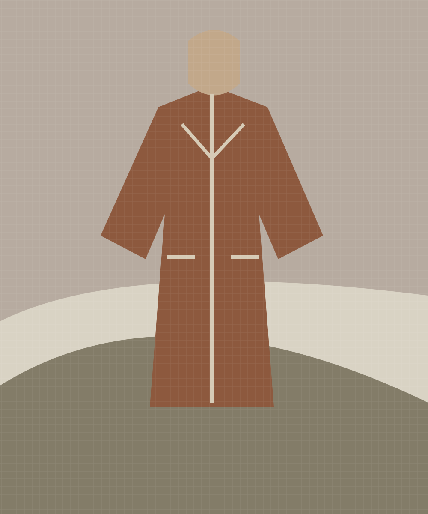
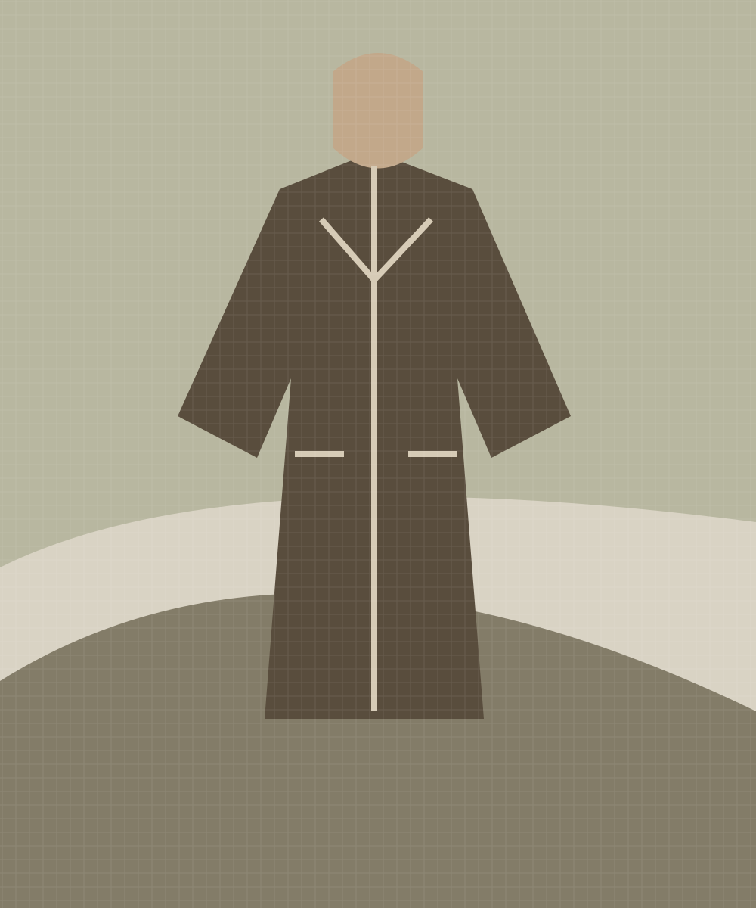
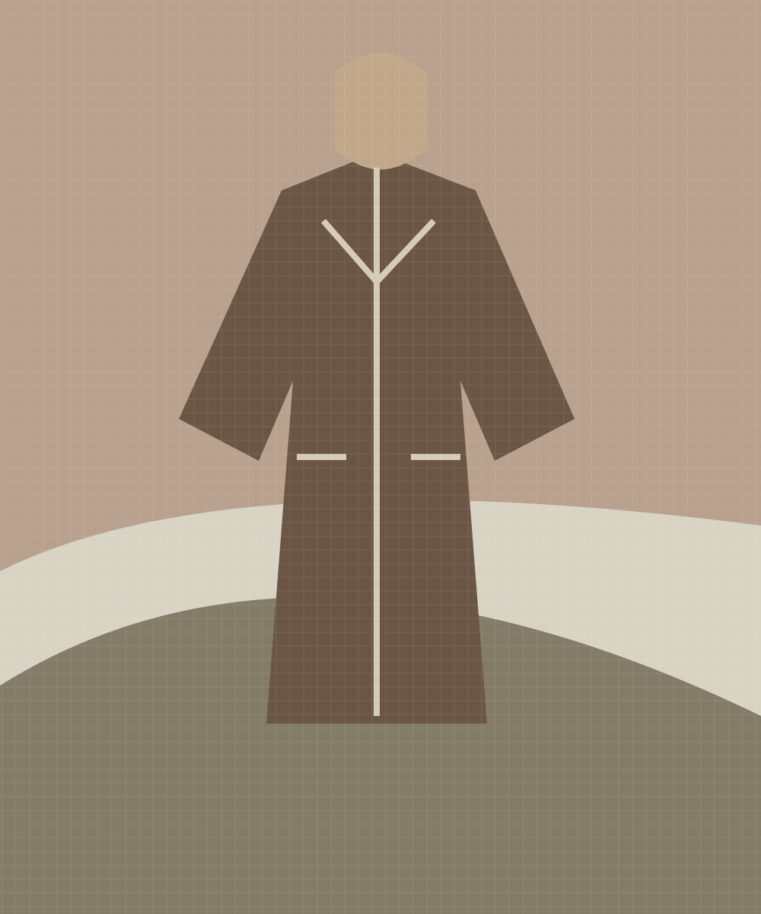

Making
A morning in the clay studio (summary-only sample)
Thoughtful things, made for everyday life.
Autumn / Winter 2026
A collection concept shaped by weathered surfaces, open ground and the slow turn towards winter.

Ochre, peat and moss settle into a quiet palette. Layers are loose enough for movement, their textures answering the roughness of a dry stone wall.
We return to simple forms, and find something new in their details.
This fictional collection narrative explores material and place. It is a visual editorial, with no shopping or video playback.

Making
Thoughtful things, made for everyday life.

Clothing
Thoughtful things, made for everyday life.